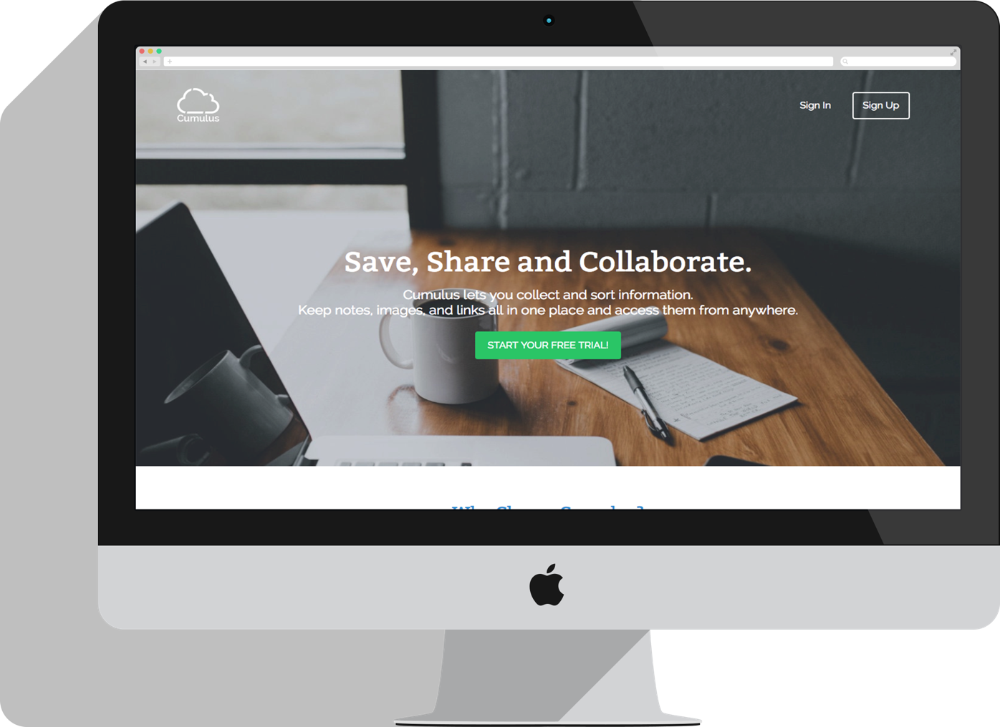

Featured Work

There are many software programs, websites and apps that allow users to save notes, images and links but none that can achieve all of these goals and be user friendly. Check out my case study to see how I solved this issue.
During my design apprenticeship I learned to build a music player using HTML, CSS, JQuery and JavaScript. I also learned how to use API’s to make it a functional application.
There are many software programs, websites and apps that allow users to save notes, images and links but none that can achieve all of these goals and be user friendly. Check out my case study to see how I solved this issue.